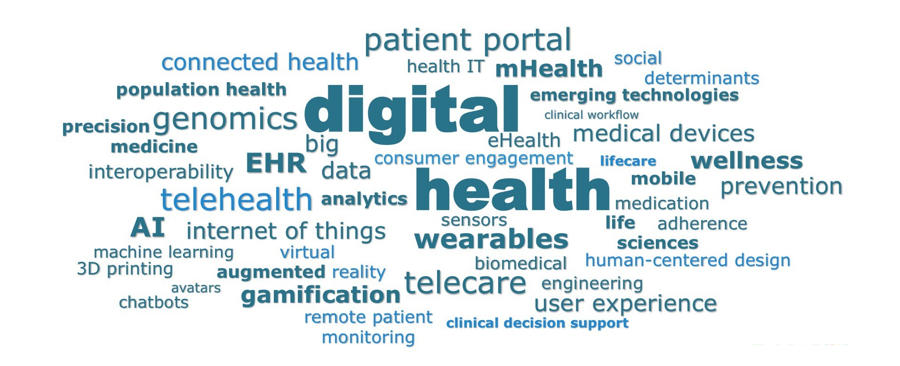

About the Workshop
As AI transforms health and care, integrating Intelligent User Interfaces (IUI) in wellness applications offers substantial opportunities and challenges. This workshop brings together experts from HCI, AI, healthcare, and related fields to explore how IUIs can enhance long-term engagement, personalization, and trust in health systems. Emphasis is on interdisciplinary approaches to create systems that are advanced, responsive to user needs, mindful of context, ethics, and privacy. Through presentations, discussions, and collaborative sessions, participants will address key challenges and propose solutions to drive health IUI innovation.

Objectives
This workshop aims to address critical challenges in designing human-centered, intelligent interfaces for health and wellness applications. Key issues include fostering long-term user engagement, personalizing experiences to meet individual needs, and building trust in AI-driven systems. Health IUIs must serve diverse stakeholders — patients managing chronic conditions, clinicians making informed decisions, and caregivers supporting loved ones — while operating in sensitive contexts where errors can have serious consequences.

Our goal is to bring together an interdisciplinary community of researchers and practitioners from fields such as human-computer interaction, artificial intelligence, healthcare, psychology, and rehabilitation sciences. By fostering collaboration across these disciplines, we aim to explore innovative solutions that balance technical advancements with user needs and ethical considerations.
The workshop will provide a platform for participants to share research findings, discuss emerging challenges, and identify opportunities for innovation in health IUIs. Through presentations and extended discussions, we aim to generate actionable insights that can guide future research and development efforts. By focusing on user-centered design principles and ethical AI integration, this workshop aims to contribute meaningfully to the advancement of health technologies that are both intelligent and empathetic to user needs.
Call for Papers
We invite full papers (max 16 pages excl. refs) and short papers (max 8 pages excl. refs), one‑column CEURART format. We welcome research, system, dataset, position, and replication papers. All submissions are peer‑reviewed and will follow ACM IUI workshop publication standards. Accepted papers will be published as part of the Joint Proceedings of the ACM IUI 2026 Workshops at CEUR: https://ceur-ws.org/. Last year proceedings can be found here: https://ceur-ws.org/Vol-3957/
- English, PDF, one‑column CEURART style
- Include author names, affiliations, and contact emails
- Optional: links to demos, data, or code
- Original work; not under review elsewhere
Templates: CEURART style Proceedings (1‑column).
Key dates (AOE)
-
Abstract submission deadline (strongly encouraged)
-
Submission deadline
-
Notification
-
Authors' registeration deadlineFeb 6
-
Camera‑ready
-
Workshop dayJuly 13
Topics of Interest
The workshop aims to explore a diverse range of topics at the intersection of intelligent user interfaces and health. By bringing together researchers and practitioners, we seek to address key challenges and opportunities in designing intelligent, user-centered health technologies. The topics of interest include, but are not limited to:
Personalized Health Interventions
AI-driven personalized health recommendations based on individual data and behaviors.
AI-Augmented Diagnostics
Enhancing diagnostics and treatment recommendations with AI support.
Assistive Technologies
AI-driven interfaces for improved accessibility and support for disabilities.
Human-AI Collaboration
Optimizing teamwork between healthcare professionals and AI systems.
Behavioral Health Support
Applications supporting mental health, cognitive function, and wellness.
Wearable Health Monitoring
Interfaces for collecting and interpreting data from wearables and sensors.
Patient Engagement & Education
Intelligent tools promoting health literacy and active patient involvement.
Ethics & Societal Implications
Exploring privacy, bias, trust issues, and equitable design in intelligent health interfaces.
Rehabilitation Technologies
AI-powered tools for personalized rehabilitation and recovery tracking.
Health Information Presentation
Recommendations, summarization, and explanation tailored to user goals and context.
Multimodal & Conversational Interaction
Speech, text, vision, and mixed-initiative IUIs for actors across care pathways.
Behavior Change & Chronic Care
Well-being and management of chronic disease or mental health, with longitudinal support.
Important Dates (AoE)
Registration Deadline for Authors (Feb 6)
Join HealthIUI 2026 Online
HealthIUI 2026 — Morning Session
July 13, 2026 · 09:00–12:30 · Room Atrium C
Program — July 13, 2026 — Room Atrium C
Organizers & Program Committee
Program Committee
We value diverse expertise and backgrounds.
Organizers
Peter Brusilovsky
University of Pittsburgh
Behnam Rahdari
Stanford University
Shriti Raj
Stanford University
Helma Torkamaan
TU Delft
Venue & Travel
HealthIUI 2026 is co‑located with ACM IUI 2026 at the Coral Beach Hotel & Resort, Paphos, Cyprus.
Contact
For sponsorship, collaborations, media, or questions, reach out to us:
Email: healthiuiworkshop@gmail.com